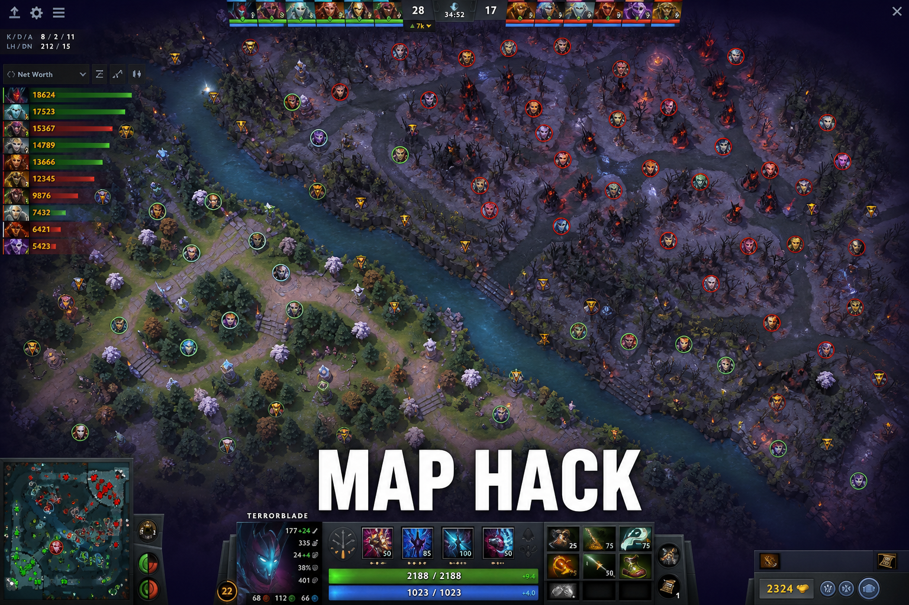
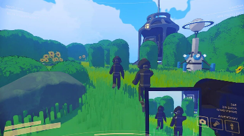

Map awareness when you are tilted
People say look at the minimap like it is a personality trait. When you are tilted, you need habits — not lectures.

Map awareness is a habit, not a personality
People say “look at the minimap” like it is a virtue. When you are down 2k gold and your support just stole your bounty rune, you are not scanning anything. You need a rhythm that survives tilt.
What worked: glance at the minimap every time I last-hit a creep. Not every second — every creep. That cadence stopped tunnel vision without pretending I have pro focus.
Chase rules when tilted
Stop chasing kills past tier two unless you have numbers. Most throws start with one low-HP target and four enemies waiting in fog. Classic. Still happens. Less often if you set a hard rule before the game starts.
- Last-hit → minimap check.
- Missing heroes → assume smoke until proven otherwise.
- No chase past T2 alone.
- Roshan area without vision = not a fight, a gamble.

Tools and honesty
Some players use DOTA2 cheats for ward and map reads. The gap between info and no info is massive. You feel it every time their jungler is always in the right place and yours is not.